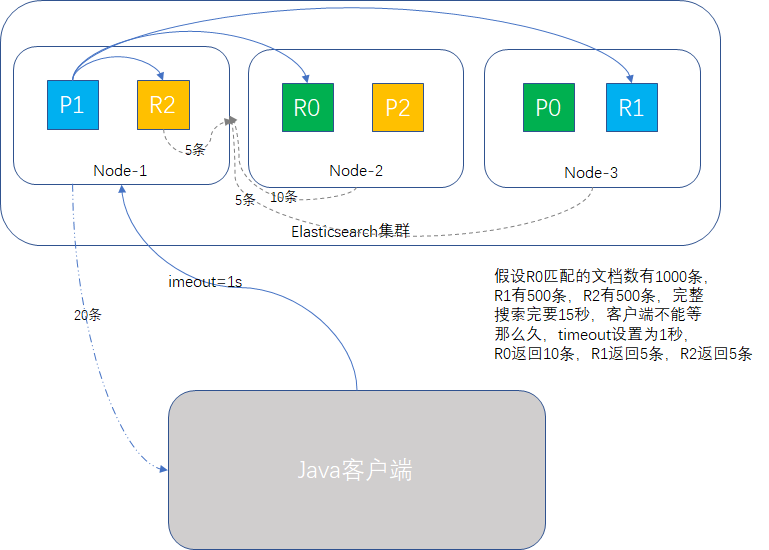
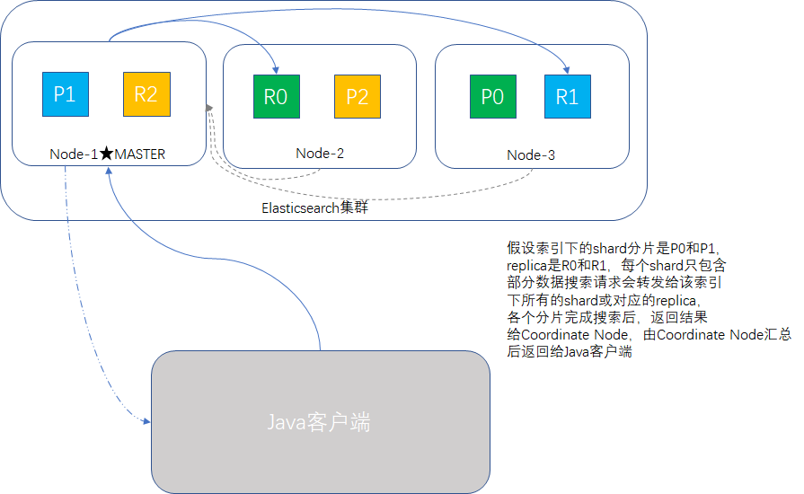

原文连接:https://www.cnblogs.com/huangying2124/p/12071185.html
概要
本篇主要介绍搜索的报文结构含义、搜索超时时间的处理过程，提及了一下多索引搜索和轻量搜索，最后将精确搜索与全文搜索做了简单的对比。
空搜索
搜索API最简单的形式是不指定索引和类型的空搜索，它将返回集群下所有索引的所有文档（默认显示10条）：
GET /_search
响应的结果示例(有筛选，只取了一条document作为示例)：
{
"took": 2,
"timed_out": false,
"_shards": {
"total": 5,
"successful": 5,
"skipped": 0,
"failed": 0
},
"hits": {
"total": 3,
"max_score": 1,
"hits": [
{
"_index": "music",
"_type": "children",
"_id": "2",
"_score": 1,
"_source": {
"name": "wake me, shark me",
"content": "don't let me sleep too late, gonna get up brightly early in the morning",
"language": "english",
"length": "55",
"likes": 9
}
}
]
}
}针对响应报文的字段，我们做一些简单解释:
- took：整个搜索请求花费了多少毫秒。
- time_out：查询是否超时。
- _shards：查询中参与分片的总数，其中成功的分片数量，失败的分片数量，以及跳过的分片数量。正常情况下不会有失败的分片数量，如果发生了灾难级别的故障，超过了容错的最大node数量，可能会同时丢失shard和replica，此时会报告这些分片是失败的，但还是会继续返回剩余可用分片的查询结果。
- hits：包含total表示匹配到的文档总数，max_score值是所有匹配文档中_score的最大值。
- hits.hits：数组内包含匹配的文档的完整信息，默认查询前10条数据，并且按_score降序排序。
timeout机制
默认不使用timeout参数，如果某些场景下，低响应比搜索完整结果更重要，可以指定timeout为10ms或1s，在指定的超时时间内，Elasticsearch会把已经成功搜索到的文档返回。
注意timeout不是停止执行查询，它只是告诉Coordinate Node返回到指定时间为止收集到的结果，并且关闭连接，在ES后台，其他node正在进行的查询并不会中断，只是结果没人要了。
举个例子：某电商平台商品SKU品类300万条，输入某个关键字查询，有2000条记录匹配，但是要查15秒钟，一个搜索要等15秒才出结果，显得太不专业了，产品有SLA要求，必须1秒内出结果，最快的解决方案是查询使用参数timeout=1s，前端分页显示默认只展示20条，1秒内的查询结果要填满这20条还是比较容易的。

多索引搜索
一个搜索请求，可以同时写多个索引名称，这叫做multi-index搜索模式。
/_search：所有索引，所有type下的所有数据都搜索出来
/index1,index2/_search：同时搜索两个index下的数据
/1,2/_search：按照通配符去匹配多个索引
单一索引下搜索时，ES会转发请求到索引的每个分片中，shard或replica均可，然后收集结果返回。多索引时，原理相同，只是涉及的分片更多。另外搜索一个索引有5个分片和搜索5个索引各有一个分片，性能是等价的。
顺带我们看一下搜索原理示意图：

轻量搜索
有两种形式的搜索API，一种是query string search，查询条件和排序规则写在request URI里，也叫轻量搜索；另一种是query DSL，查询条件等信息用JSON格式写在request body里。
轻量搜索的示例：
单个字段搜索，"q="后面接的是查询条件"field:text"，field是字段名，text是搜索的关键词，有三种前缀修饰符：
GET /music/children/_search?q=content:friend
GET /music/children/_search?q=+content:friend
GET /music/children/_search?q=-content:friend- "+"号前缀表示必须与查询条件匹配。
- "-"号前缀表示一定不与查询条件匹配。
- 默认没写前缀表示条件可选
匹配的条件越多，文档就越相关。
如果多个字段搜索，多个条件之间要有空格：
GET /music/children/_search?q=-content:friend +name:wake_all元数据的原理
如果"q="后面没写field，直接跟的是搜索关键词，表示搜索指定索引下的所有字段，如下：
GET /music/children/_search?q=friend只要music索引下的document，任何一个字段包含friend，就能搜索出来。那_all是怎么来的？
_all是Elasticsearch中的元数据，在建立索引的时候，新增一个document里面包含了多个field，此时，es会自动将多个field的值，全部用字符串的方式串联起来，变成一个长的字符串，作为_all field的值，同时建立索引。后面如果在搜索的时候，没有对某个field指定搜索，就默认搜索_all field。
找个document示例：
"name": "wake me, shark me",
"content": "don't let me sleep too late, gonna get up brightly early in the morning",
"language": "english",
"length": "55",
"likes": 9"wake me, shark me don't let me sleep too late, gonna get up brightly early in the morning english 55 9"，作为这一条document的_all field的值，同时进行分词后建立对应的倒排索引
注意事项
轻量搜索在开发阶段会拿这些命令来做一些简单的查询，实际生产中用得比较少，语法复杂容易错，并且可阅读性低，遇到重量级查询，还有可能会把ES集群拖垮。
精确搜索与全文搜索
Elasticsearch的数据类型可以分成两类：精确值和全文。
精确值（exact value）
精确值如日期、ID，数值类型，有些文本类型也可以表示精确值，如邮箱、常用缩写等等。精确值的一个特点是必须完全相同、大小写敏感，很容易查询，hello与Hello是不相等的，日期为2019-11-20的字段值，输入2019是搜索不到的。- 全文（full text）
全文数据就微妙得多，拿英文来说，各种词根变化、大小写转换、同义词、缩写，汉字方面各种分词、词库、网络词等，都希望匹配程度能高一些，能够理解我们的意图，举几个中文例子： - 南京市长江大桥，有一些分词器得到的结果：南京/市长/江大桥，完全不是我们想的结果，我们希望是：南京/南京市/长江/大桥/长江大桥。
长春市长春街长春药店，分词分得不对，搞成这样：长春/市长/春/街/长/春药/店，结果就很尴尬了。
全文搜索方面，最基本的步骤是先分词，再索引，然后搜索时进行匹配，英文相对好办，中文方面有相像不到的难点要去克服。
小结
本篇介绍搜索的基础知识，阐述搜索结果的含义，多索引搜索和轻量搜索的基本使用，最后对比了一下精确搜索与全文搜索，以及著名的中文分词大坑，谢谢。
专注Java高并发、分布式架构，更多技术干货分享与心得，请关注公众号：Java架构社区